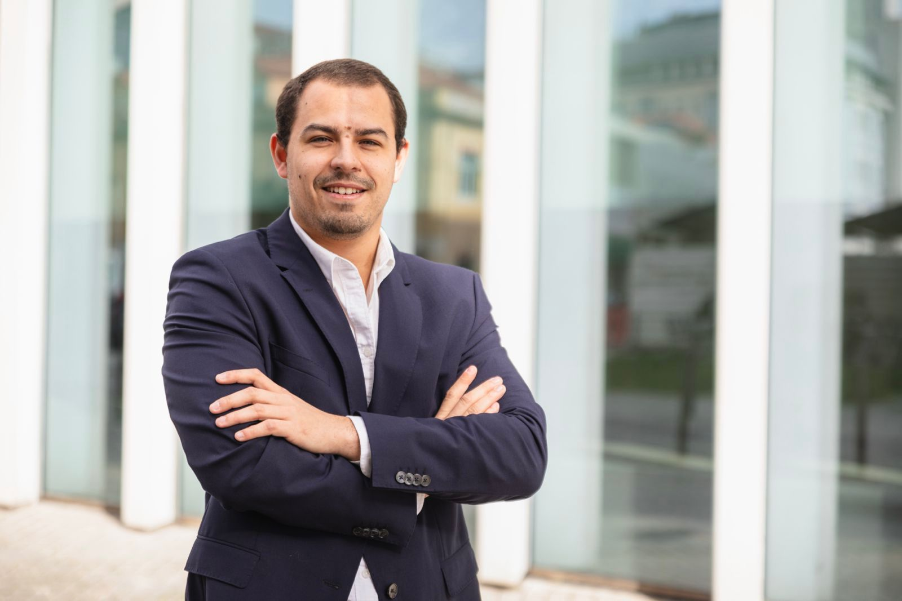

João Pereira
I work at the intersection of project management, public sector strategy and startup ecosystem development. My experience combines innovation programmes, stakeholder coordination, territorial strategy and business development.

About
I am a management professional based in Lisbon, with academic training from ISEG, Católica Lisbon School of Business and Economics, and Florida International University. I currently work as a Project & Innovation Manager at Loures Innovation Hub, where I coordinate startup incubation initiatives, innovation programmes and operational development.
My background includes public sector strategy consulting, business development and stakeholder management, with a strong interest in innovation, entrepreneurship, regional development and projects with measurable impact.
Professional Experience
Project & Innovation Manager — Start-Up Incubator
- Lead end-to-end project management for core incubator initiatives.
- Coordinate certification processes, startup admissions frameworks and operational scaling.
- Plan and execute innovation programmes including bootcamps, workshops and acceleration initiatives.
- Act as central coordination point between startups, mentors, partners and internal teams.
Public Sector Strategy Consultant
- Led the strategic reorganisation of the Bucelas wine region tourism ecosystem.
- Aligned public and private stakeholders around a unified positioning strategy.
- Helped restructure the municipality’s tourism service by defining priorities and steering team alignment.
Business Developer Intern
- Identified and onboarded new partner businesses through targeted outreach.
- Presented the company’s value proposition and supported the full sales cycle.
- Conducted market research and collaborated with Growth teams to improve partner performance.
Education
Master’s Degree in Management, Major in Finance
Coursework completed. Relevant areas: Financial Markets, Mergers and Acquisitions, Business Strategy and Planning.
Bachelor’s Degree in Business Administration
Relevant grades: Operations Management, HR Management and Strategy.
International Business Summer Trimester
Relevant courses: Public Speaking, Business Finance, Sales and Marketing.
High School Senior Year
Relevant courses: Advanced Statistics, US History and Economics, Anatomy Honors and Photography.
Skills
Core Skills
Tools & Languages
Additional Experience
Financial Markets Certificate
Completed a Financial Markets course with honors distinction.
Golf
Participated in national championships, developing discipline, focus and perseverance.
Volunteering
Supported event operations, food distribution and logistics for community welfare initiatives.
Let’s connect
Available for opportunities in innovation, project management, strategy and entrepreneurship ecosystems.